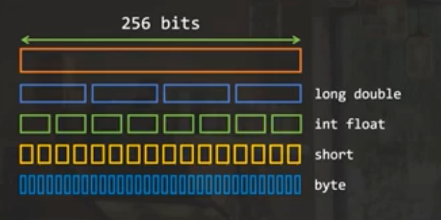
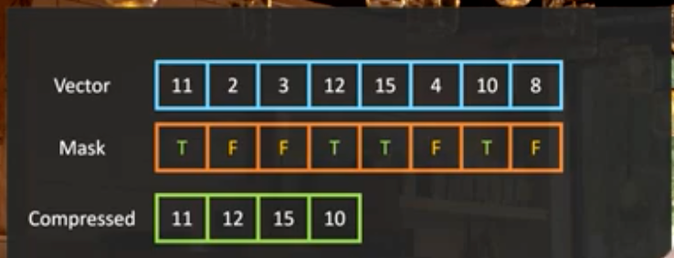

Java 向量化知识
Java VectorAPI 利用 SIMD 指令来提升计算性能。
1. CPU 工作机制
CPU 分为多个计算核心(core, PU), 每个核心干的工作就是 周期性的执行指令，因此一条指令 执行时间就是一个周期（CPU cycle）。
CPU 有不同架构，不同架构的 CPU 支持的 指令集不同。
有几种矢量指令集支持 一条指令处理多条数据（SIMD）：
- AVX2：一条指令能处理 256-bit宽度的数据，e.g. 4 个 Long 类型
- AVX512：一条指令能处理 512-bit宽度的数据，e.g. 8 个 Long 类型
区别于多核多线程：
- Spark 中 executor 有多个 core，每个core 分配一个 task 线程
- 而 SIMD 是在线程内优化，每个线程的 一条指令（一个 core 上运行）会处理多条数据。
如下图所示，
- SISD: 处理4条数据需要 4 条指令
- SIMD: 处理4条数据只需要 2 条指令，因为一次处理两条
{kind=link}
2. SIMD 产生计算收益的来源？
程序底层看，每一行代码对应于多个 CPU 指令，每条指令执行所消耗的时间 用 CPU cycle 来衡量。
SIMD 是相对于 SISD 而言，SISD 是单指令处理单条数据，SIMD 是单条指令处理多条数据。
直观解释就是，本来处理多条数据需要多条指令、需要消耗多个 cpu cycle；由于对这些数据的处理都是一样的，并且底层指令支持用一条执行处理多条数据，因此，就能达到只用一个 cpu cycle 处理多条数据的目的。
因此，使用 SIMD 指令不存在浪费一说，只是将计算单元的算力最大化使用了。
3. SIMD 中的 M 究竟是多少？
一条指令究竟能处理多少条数据呢？这个取决于你的 CPU 支持的指令寻址宽度，JDK Vector API 支持在 Runtime 获取这个宽度(SPECIES_PREFERRED)可以 示例代码：
var species = IntVector.SPECIES_PREFERRED;
for (int index=0;
index < v1.length;
index += species.length()) {
var V1 = IntVector.fromArray(species, v1, index);
var V2 = IntVector.fromArray(species, v2, index);
var RESULT = V1.add(V2);
RESULT.intoArray(result, index);
}
{kind=link}

在 JDK 的 Vector：SPECIES 指的是 CPU 支持的宽度 除以 Vector 中单个元素的大小
4. SIMD 如果 M 不是 8 byte 整数倍(not align)怎么办？
自适应的方法是：使用 Vector Mask 示例代码：
for (int index=0;
index < v1.length;
index += species.length()) {
var mask = species.indexInRange(index, v1.length);
var V1 = IntVector.fromArray(
species, v1, index, mask);
var V2 = IntVector.fromArray(
species, v2, index, mask);
var RESULT = V1.add(V2, mask);
RESULT.intoArray(result, index, mask);
}
万金油方法（虽然不够简洁），下述方法比 “在 CPU 不支持 Vector Mask 情况下用 Mask” 性能好
var species = IntVector.SPECIES_PREFERRED;
int index = 0;
for (; index < species.loopBound(v1.length);
index += species.length()) {
var V1 = IntVector.fromArray(species, v1, index);
var V2 = IntVector.fromArray(species, v2, index);
var RESULT = V1.add(V2);
RESULT = intoArray(result, index);
}
for (int index2 = index; index2 < v1.length; index2++) {
result[index2] = v1[index2] + v2[index2];
}
5. 概念解析：lane、classic for loop
Jdk SMID Vector 中的每个元素叫做 lane（车道），这个用于形象化描述数据“流过”指令的情形。 对 Vector 中元素的操作分为：
- lane-wise operation：独立对每个lane上的元素计算，类似 spark 中的 map 操作，比如两个 Vector 对应位置相加、单个 Vector 每个元素 +1 等操作
- cross-lane operation：计算的时候用到不同 lane（Vector中的元素）。类似 spark 中的聚合操作，比如 求 sum/min/max/norm，sort 一个 vector 中的元素
对于没有利用到 SIMD 优化的循环：classic for loop
6. 例子：计算 Norm
计算拆解
- \(x_i^2\): lane-wise operation
- \(Sum\): cross-lane operation
CPU 支持 Vector Mask 的写法：
- 先 lane-wise 求平方和
- 再 cross-lane 求 partial sum
- 遍历完所有元素后，就完成了计算 ToDo：思考🤔 如何写 CPU 不支持 Vector Mask 的场景
另一种写法：
- 先 lane-wise 求平方和
- 在 lane-wise add 操作
- 直到遍历完所有元素后， cross-lane 求sum
double sum = 0d;
var V3 = IntVector.zero(species);
int index = 0;
for(; index < species.loopBound(v.length);
index += species.length()) {
var V = IntVector.fromArray(species, v, index);
var V2 = V.mult(V);
V3 += V3.add(V2);
}
double sum = V3.reduceLanes(VectorsOperators.ADD);
for(; index < v.length; index) {
sum += v[index]*v[index];
}
double norm = Math.sqrt(sum);
7. 例子：计算 average
double sum = 0d;
for(int index = 0;
index < v.length;
index += species.length()) {
var mask = species.indexInRange(index, v.length);
var V = IntVector.fromArray(
species, v, index, mask);
sum += V2.reduceLanes(VectorsOperators.ADD, mask);
}
double average = sum / v.length;
Cross-lane 操作通过传递 VectorsOperators.XXX 给 reduceLanes 方法实现 VectorsOperators.XXX 包括：
- ADD, MULT, MIN, MAX, some boolean or bitwise operation
- 这些操作都是和汇编指令 一一对应的， 所以不支持传递 lambda 表达式
8. 例子：filter reduce，先过滤，再计算
下面是在 支持 Vector Mask 的CPU上的代码（也可以自己实现不支持 Mask 的逻辑）：
int[] result = new int[v.length];
int maxIndex = 0;
for (int index = 0;
index < v.length;
index += species.length()) {
var mask = species.indexInRange(index, v.length);
var V = IntVector.fromArray(
species, v, index, mask);
// 返回一个 Vector，指示哪个元素pass the test
// 此处的 mask 没法使用其他方式实现。
var cmp = V.compare(VectorOperators.GT, limit, mask);
// copy compressed vector to your array, at the position that you
// need to increment in each loop
V.compress(cmp).intoArray(result, maxIndex);
maxIndex += cmp.trueCount();
}
或者直接计算结果，不用存储 filtered 结果
int[] result = new int[v.length];
int maxIndex = 0;
for (int index = 0;
index < v.length;
index += species.length()) {
var mask = species.indexInRange(index, v.length);
var V = IntVector.fromArray(
species, v, index, mask);
// 返回一个 Vector，指示哪个元素pass the test
// 此处的 mask 没法使用其他方式实现。
var mask2 = V.compare(VectorOperators.GT, limit, mask);
sum += V.reduceLanes(VectorOperators.ADD, mask2);
count += mask2.trueCount();
}
double average = sum / count;
Vector 的 compress 操作：
- 是一个 cross-lane 操作
- 删除 mask 为 false 的元素。如下

{kind=link}
9. 最佳实践
大多数时候，只需要优化 外层循环即可
- Copy array into a vector, chunck by chunck
- Compute in parallel over Vector lane
10. C2 编译器，可以不用改 Java 代码就能自动用到 SIMD 优化，free performance
11. 典型应用场景
- Array comparisons
- string conversions from one charset to another
Ref
- CPU 指令集 AVX